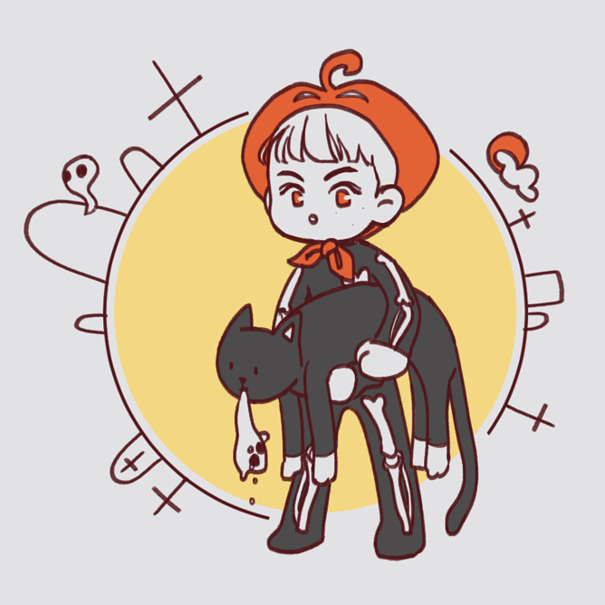

어제 저녁에 누군가 문을 쾅쾅 두드리는 소리를 들었다. 잠에 흠뻑 취한 나는 일부러 집에 없는 척 기척도 내지 않았다. 이동혁 진짜 없어? 이제노였다. 이제노는 한참 그러고 있다가 돌아갔다. 틈만 나면 나에게 연락을 했다. 어저께도 어제도, 오늘도. 일주일 전부터 그랬다. 내가 반 죽은 것처럼 일주일을 보내서였다. 학교도 알바도 안 가고 계속 잠만 잤다. 하루에 스무 번은 자다 깨기를 반복했다. 꿈에서 형 만나려고. 형 꿈 꾸려고. 근데 진짜 야속하게도 한 번을 만나주지 않았다.
꿈이 뭐라고. 꿈에서 그 형 만나는 게 뭐라고. 그냥 눈만 뜨면 사라지는 건데. 형체도 없고 기억도 또렷하지 않은데. 나만 잊으면 그만인데 그게 뭐라고 이렇게 매달리는 거지. 근데 나는 농담처럼 계속 있고 싶다고 한 거였다. 반은 진심이었지만 그렇다고 영원히 눈 안뜰 것도 아닌데, 왜 갑자기 걱정하는 척 안 나타나고 안 만나주는 건데? 그게 너무 억울했다.
꼬박 일주일을 지나고 형을 만났다. 나는 언제부턴가 계속 형, 형 부르고 있었는데 오늘은 그냥 야! 하고 불렀다. 근데 그거엔 하나도 안 놀랬는데 표정이, 그냥 좀 그랬다. 방금 잠들기 전에 보고 온 거울 속의 나처럼. 초췌하고 막. 그러면서 나한테 왜 그랬냐고 물었다. 내가 뭘? 했더니 왜 제대로 먹지도 않고 나가지도 않고... 그러냐고.
'니가, 아니 형. 형이 나 안 만나주니까. 내가 그러라고 하지도 않았는데 왜 멋대로 도망가?'
형은 입을 꾹 다물고 눈만 깜박거렸다. 나는 거기에 더 화가 나서 울컥 쏟아내려다 꿀꺽 삼켰다. 마른 침이 함께 목구멍을 지나갔다.
'보고 싶었는데. 진짜, 보고 싶었는데 연락도 안 하고.'
그제야 살짝 풀어진 표정으로 형이 그랬다. 내가 연락을 어떻게 하나고. 그래서 이게 내 꿈인 건 알아? 하려다가 또 삼켰다. 꿈이라고 말하면 진짜, 진짜로 갑자기 사라져 버릴까 봐.
'형 만나려고 몇 번이나 다시... 온 줄 알아?'
'미안해. 근데 걱정돼서.'
'그냥 만나는 게 좋다고. 좋은 게 왜 걱정돼? 나는 그냥 형 이름 하나 붙여주고 싶었을 뿐인데. 그냥 같이 있고 싶었던 건데.'
그러고 보니 오늘 장소도 저번 주랑 같았다. 주변이 온통 캄캄한 관람차 안. 천장의 불빛이 무릎을 꾹 잡은 내 손에 일렁인다. 나는 고개를 숙였다. 일렁이던 불빛이 그림자에 삼켜졌다.
형 이름 이민형 해. 내 이름 이동혁에서 이 씨. 나랑 전에 만났던 형 하나 있는데 그 형 이름도 민형이야 이민형. 나 버리고 훌쩍 캐나다 갔어. 진짜 재수 없어. 그러니까 형이 이민형 해. 짜증나니까 이민형.
그렇게 말하면서 나도 모르게 엉엉 울고 있었나보다. 꿈에서 못 만난 게 뭐라고? 나는 내가 우는 게 이해가 안 갔다. 그게 뭐라고 그렇게 억울해서 숨 쉬면서 잠만 자려고 하고, 꿈꿔서 만나려고 했을까. 서운했나? 나한텐 물어보지도 않고 나 때문에 훌쩍 떠나버린다는 게. 맞아, 그게 서운해서 그랬다. 불빛을 가린 그림자 안으로 뚝뚝 떨어지는 눈물이 보였다. 무릎을 꾹 집은 손등을 적신다. 형은 나와 마주 보고 앉아있다가 슬금 일어나 나를 꼭 안았다.
